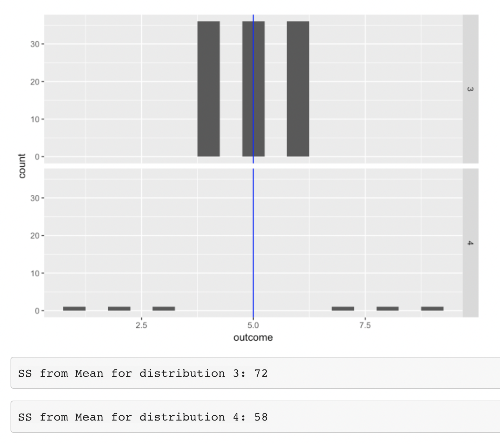
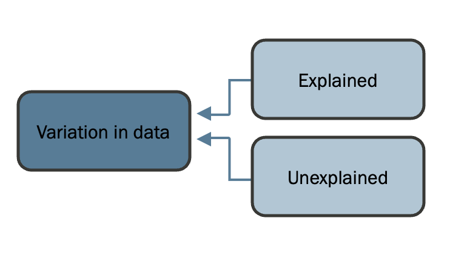
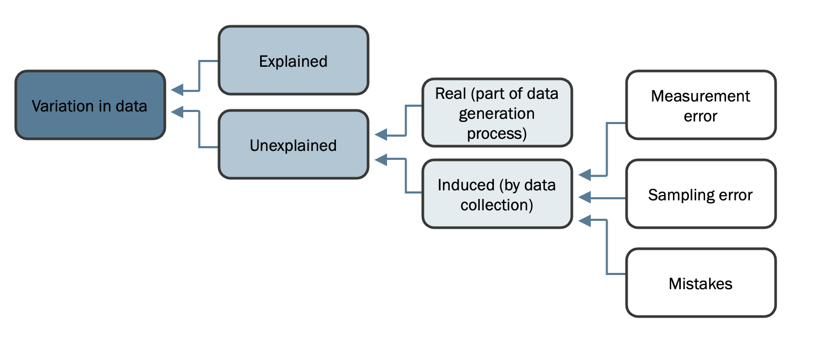
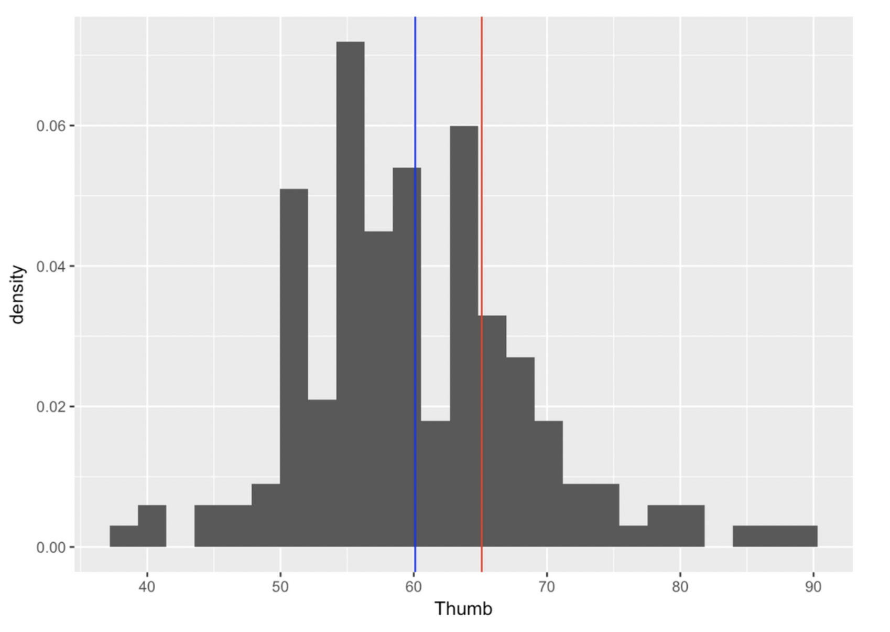
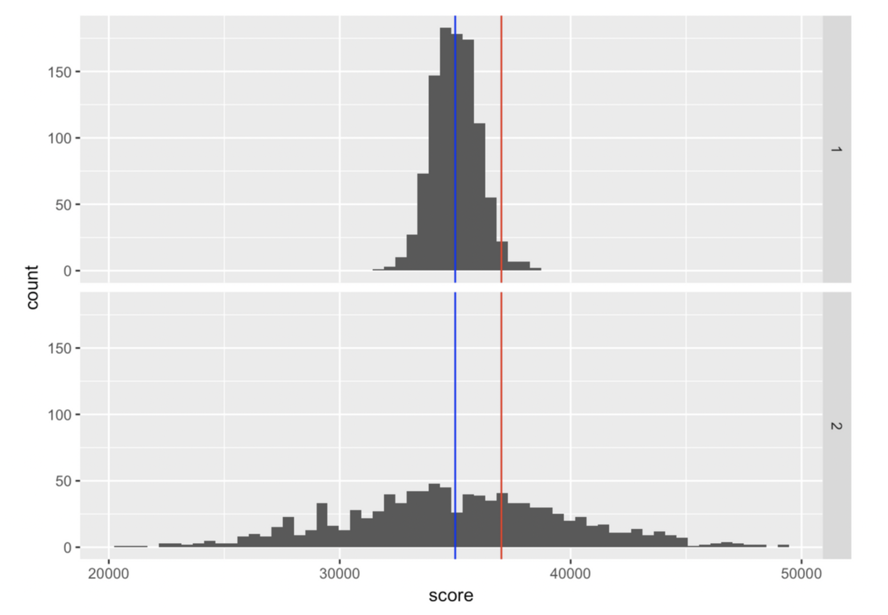
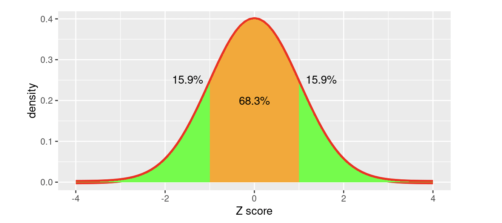

Previous: Chapter 9 - Statistical Models
# This chapter uses packages that takes a few minutes to download on Google Colab.
# Run this first so it's ready by the time you need it
install.packages("ggformula")
library(ggformula)
studentdata <- read.csv("https://raw.githubusercontent.com/smburns47/Psyc158/main/studentdata.csv")
Chapter 10 - Quantifying Model Error#
10.1 Error in a model#
Up to now we have developed the idea that a statistical model can be thought of as a number, a predicted value for the outcome variable. We are trying to model the data generation process, but because we can’t see the data generation process directly, we fit a model to our data and estimate parameters.
Sometimes we have a pretty good model - our predicted values closely match those in a sample of data taken from the population. But sometimes our model is pretty poor, and our predicted values are way off.
Using the DATA = MODEL + ERROR framework, we have defined error as the residual that is left after we account for the variance in our data that the model can explain. In the case of our simple model for a quantitative outcome variable, the model is the mean, and the error (or residual) is the deviation of each score above or below the mean.
We represent the simple model like this using the notation of the General Linear Model:
This equation represents each score in our data as the sum of two components: the mean of the distribution (represented by b0), and the deviation of that score above or below the mean (represented as ei). In other words, DATA = MODEL + ERROR.
In this chapter, we will dig deeper into the ERROR part of our DATA = MODEL + ERROR framework. In particular, we will develop methods for quantifying the total amount of error around a model. At the outset, it is worth remembering what the whole statistical enterprise is about: explaining variation. Once we have created a model, we can think about explaining variation in a new way, as reducing error around the model.
We have noted before that the mean is a better model of a quantitative outcome variable when the spread of the distribution is smaller than when it is larger. When the spread is smaller, the collection of residuals from the model are smaller. Quantifying the total error around a model will help us to know how good our models are, and which models are better than others.
10.2 Error distributions#
Let’s again consider the situation where we are modeling the length of people’s thumbs in the dataset fingers using the mean of that variable. First, generate an linear model using the lm() function, and then make a new variable to hold the residuals:
thumb_model <- #use lm() here with the variable "Thumb" in dataset "fingers"
fingers$Thumb_residuals <- #use resid() here on the generated model
head(fingers)
The residuals of a model are the differences between what the model predicts for each person’s thumb length, and what their thumb length actually is: Yi - Y^i. We now have the residuals for each person stored in the variable Thumb_residuals. Much like it is useful to plot a histogram of a variable to begin to understand it, we can also plot a histogram of these residuals. This is called the error distribution. Describing the center, spread, and shape of the error distribution of a statistical model helps us evaluate how good the model is.
gf_histogram( ~ Thumb_residuals, data = fingers) %>%
gf_vline(., xintercept = mean(fingers$Thumb_residuals))
10.3 Central tendency of error#
The first thing to note about an error distribution is where it is centered. When we base a statistical model on the mean of an outcome variable, like lm() always does, the mean of the residuals is always centered on zero. This highlights why the mean is a great starting place for building a model. It turns out that no number other than the mean will perfectly balance the deviations above the mean with those below the mean. Every value gets taken into account when calculating the mean. The mean is pulled in both directions (larger and smaller) at once and settles right in the middle. The mean is the number that balances the amount of deviation above and below it, yielding the same amount of error above it as below it. As it turns out, in the absence of other information about the objects being studied, the mean of our sample is the best single estimate we have of what data from the population looks like. It is equally likely to be too high as it is too low, making it an unbiased estimator of the parameter.
Because it is our best guess of what the population parameter is, it is the best predictor we have of the value of a subsequent observation. While it will almost certainly be wrong, the mean will do a better job than any other individual number.
If we were to pick a different number than the mean to use as the model, our residuals would no longer center on zero and on average we would make worse predictions. Check it out below:
not_the_mean <- 55
fingers$Thumb_bad_residuals <- fingers$Thumb - not_the_mean
gf_histogram( ~ Thumb_bad_residuals, data = fingers) %>%
gf_vline(., xintercept = mean(fingers$Thumb_residuals)) %>%
gf_vline(., xintercept = mean(fingers$Thumb_bad_residuals), color = "red")
This alternative error distribution has a red line to indicate the mean of the residuals. Since a residual means deviation between a prediction and a real value, we can see that using this bad model (e.g., an individual number below the mean) will result in fewer predictions that are too large. This is because we’re now always guessing 55 instead of 60. But this also means there are more predictions that are too small, and in general our predictions are off by a greater amount.
10.4 Spread of error#
We have noted before that the mean is a better model of a quantitative outcome variable when the spread of the distribution is smaller than when it is larger. When the spread of a variable is smaller, the spread of the residuals from the model are smaller. Quantifying the total error around a model involves describing this spread, and will help us to know how good our models are.
To make this concrete, look again at the distribution of error from using the mean as a model:
gf_histogram( ~ Thumb_residuals, data = fingers) %>%
gf_vline(., xintercept = mean(fingers$Thumb_residuals))
A worse model means predictions are farther away from the true data points. So if we want to quantify total error, would we just add up all the residuals? If worse models have more error, the sum of all the errors should represent the “total” error, right?
Let’s do that, using one of the first R functions you learned, sum(). The following code will add up all the residuals calculated by thumb_model.
sum(fingers$Thumb_residuals)
The sum of all error in this model is actually 0 (or a number so tiny it’s practically zero and is just a rounding error in the computer).
Although we might at first think that the sum of the residuals would be a good indicator of total error, we’ve discovered a fatal flaw in that approach: the sum of the residuals around the mean is equal to 0! If this were our measure of total error, all data sets would be equally well modeled by the mean, because the residuals around the mean would always sum to 0. A data set widely spread out around the mean, and one tightly clustered around the mean, would have the same amount of error around this simple model. Clearly we need a different approach.
We can return back to the measures of spread in a distribution that we learned in chapter 5 and apply them to describing total error in a statistical model. Because several of those measures involve talking about spread as deviations away from the middle of a distribution, we can also use them to talk about deviations in a model based on the mean (i.e., spread in an error distribution).
Sum of squares#
First we’ll use a type of spread measure we didn’t directly work with yet - sum of squares. As we talked about in chapter 5, one way to get around the issue of positive and negative deviations adding up to zero is to square all those numbers first before adding them together. That’s all sum of squares is: the sum of all the squared residuals after fitting a model to data. Mathematically, this is written as:
Where Y-hati is the prediction our model makes for the value of Yi. In the case of an empty model, that’s just the mean of variable Y, or Y-bar. Since we already have the column Thumb_residuals in fingers, we can easily create a column of squared residuals. Adding those together will create the overall sum of squares for our model.
sum(fingers$Thumb_residuals**2)
There may be some rounding errors going on again, but you can see the sum of squares (or SS for short) is about 1180.21, and not 0 this time. In addition, SS helps us distinguish better-fitting models from worse ones because it is a measure of total error that is minimized exactly at the mean. Since our goal in statistical modeling is to reduce error, this is a good thing. In any distribution of a quantitative variable, the mean is the point in the distribution at which SS is lowest.
R also has a handy way of finding the sum of squares in a model automatically generated with lm(). Once we have a model object, we can use a function called supernova() from the supernova package to create an ANOVA table that allows us to look at the error from this model. ANOVA stands for ANalysis Of VAriance. Analysis means “to break down”, and later we will use this function to break down the variation into parts. But for now, we will use supernova() just to figure out how much error there is around the model, measured in sum of squares.
install.packages("supernova")
library(supernova)
thumb_model <- lm(Thumb ~ NULL, data = fingers)
supernova(thumb_model)
There are a bunch of other things in this output that we will talk about in later chapters. For now, focus your attention on the row labeled “Total (empty model)” and the column labeled “SS”. This stands for the sum of squares around the empty model (e.g., sum of squared deviations from the mean). We see the same value (1180.21) that we previously calculated with the longer sequence of R commands in which we calculated the residuals, squared them, and then summed the squared residuals.
Mean squared error#
Sum of squares is a good measure of total variation if we are using the mean as a model. But, it does have one important disadvantage. To see it, compare these two distributions:
The one on top is clearly less spread out than the distribution on the bottom, so we would expect that if we used the mean to model that distribution, there’d be less error. However, because there are more data points in that distribution, there are just more error values to add up. The sum of squares becomes larger than that for the more spread out distribution.
This problem is solved by using mean squared error instead. For an empty model this is represented by the equation:
The equation above takes the total error (the sum of squares we just computed - can you find that quantity in the equation above?) but then divides by the sample size to end up with a measure of average error around the mean — the average of the squared deviations. Does this equation seem familiar? Let’s copy and paste the equation for variance from chapter 5 and see if you notice any similarities:
Almost exactly the same! The only difference is that variance calculates the mean square deviation of data points from the mean of a distribution (Y - Y-bar), and MSE calculates the mean square deviation between data points and what a statistical model predicts them to be (Y - Y-hat). In fact, in the case where our model is just the mean of variable Y, the MSE and variance of data on Y is exactly the same (since an empty model predicts every data point will equal the mean). However, when we get to more complex models, MSE will differ from variance on the outcome variable. Try to remember it instead as variance in the residuals.
Because it is an average, MSE is not impacted by sample size, and thus, can be used to compare the amount of error across two samples of different sizes.
And how do we calculate MSE in R? You know this one already! We can use var() on the residuals variable.
var(fingers$Thumb_residuals)
#same as dividing the sum of squares by N-1
sum(fingers$Thumb_residuals^2) / (length(fingers$Thumb) - 1)
You can also find MSE with supernova() whether or not your model is the mean. Use it now to recreate an ANOVA table for thumb_model:
supernova(#YOUR CODE HERE)
If your code worked okay, you should see a table with values on the “Total (empty model)” line corresponding to “SS”, “df”, and “MS”. We already know what “SS” is. Now, we can guess that “MS” stands for “mean squared”. And as expected, since our model is the mean, the number at that spot in the table matches what we calculated with var(). The number under df, 156, is the “N-1” component of the MSE equation. With this, we can verify that SS/df = MS.
11880.211/156
#same as the variance in the residuals, just with rounding error
var(fingers$Thumb_residuals)
Root mean squared error#
The root mean squared error (abbreviated as RMSE) is simply the square root of the MSE. This is related in the same way that standard deviation is related to variance. We generally prefer thinking about model error in terms of root mean squared error because it yields a number that makes sense using the original scale of measurement. So, for example, if you were modeling weight in pounds, MSE would express the error in squared pounds (not something we are used to thinking about), whereas RMSE would express the error in pounds. RMSE is how big the residual is expected to be, on average, for any particular data point. This is written as:
Again, in the special case of the empty model where we predict every data point to be equal to the mean, RMSE is just the standard deviation of the variable we are making predictions about. In the general case, it is the standard deviation of the residuals.
See if you can find both the MSE component, and the sum of squares component in that equation. We take several mathematical steps to compute this, but if you can find the prior step in the equation, it’s not that hard to see how each measure of error relates to each other.
Of course to calculate standard deviation in R, we use sd() on Thumb_residuals:
sd(fingers$Thumb_residuals)
#same as taking the square root of variance
sqrt(var(fingers$Thumb_residuals))
#same as dividing the sum of squares by N-1 and then taking the square root
sqrt(sum(fingers$Thumb_residuals^2) / (length(fingers$Thumb) - 1))
There isn’t a spot for RMSE in the ANOVA table generated by supernova(), but it’s easy enough to calculate if we remember how it relates to mean squared error (“MS” in the ANOVA table print out).
We have discussed three ways of quantifying error around our model. All start with residuals, but they aggregate those residuals in different ways to summarize total error.
All of them are minimized at the mean, and so all are useful when the mean is the model for a quantitative variable. If you wanted to use a different single number as a model, like the median or mode, we’d have to use different measures of error (e.g., mean absolute error for median, instead of mean squared error).
To keep things simple in this class (well, simpler), from here on out we’re going to stick to using the mean as a basic statistical model and its associated measures of error sum of squares, MSE, and RMSE. The majority of data analysis projects also rely on the mean. Don’t forget about median and mode! We just won’t build models with them in this course.
10.5 Shape of the error distribution#
The final thing to notice about the distribution of residuals is how it is shaped. Check out the shape below:
gf_histogram( ~ Thumb_residuals, data = fingers) %>%
gf_vline(., xintercept = mean(fingers$Thumb_residuals))
How would you describe it in terms of modality and skew? Does it look roughly normal, or strongly distorted in any way?
Again, when talking about shapes of distributions, we always keep in mind the qualifier “roughly.” Even though this distribution is spikey, it roughly resembles a normal distribution. We’re not going to do anything with this information just yet (hang on until chapter 20). But in general, you can remember for now that the General Linear Model, the approach to building statistical models and making predictions about data that we are using in this class, works better when residuals are normally distributed. If they’re strongly not normal, that is cause for concern in evaluating what the model means and what you should do next.
10.6 Estimates vs. parameters of error#
Recall from last chapter our discussion of estimates (summaries computed from data samples) and parameters (summaries of the underlying population we are trying to guess at). We used Latin vs. Greek letters to separate our estimate of the mean, M, from the unknown population mean parameter, μ.
We’ve also now estimated error in a sample (general error e, or the special case of variance s2 and standard deviation s). It follows then, that there’s a true error out there that characterizes how all values in a population vary from μ. We don’t know this parameter, but we try to estimate it. The Greek letters for the error parameters are ε for general error (pronounced “epsilon”), σ2 for variance (pronounced “sigma squared”), and just σ for standard deviation (“sigma”). Here is a table of the estimates and parameters we’ve learned so far, to help keep them straight:
Concept |
Sample Estimate |
Population Parameter |
|---|---|---|
Mean |
Y¯ (“Y-bar”) |
μ (“mu”) |
Model error |
e (“e”) |
ε (“epsilon”) |
Variance |
s2 (“s squared”) |
σ2 (“sigma squared”) |
Standard deviation |
s (“s”) |
σ (“sigma”) |
10.7 Sources of error#
This is a good time to think a little more about where variation in data even comes from. Why are our models making inaccurate predictions? We already have talked about the data generation process — the process that generates variation in the population from which we collected our sample of data. With our statistical models, we are trying to approximately describe that process. But using just the mean as a model is usually poor - the data generation process includes a lot of different components that, working together, produce the variation we see in an outcome variable. What are these sources of variation?
There are three important points we want to make about sources of variation. First, variation can be either explained or unexplained.
In the word equation we presented before, DATA = MODEL + ERROR, explained variation is the portion of the total variation in DATA we are able to explain with MODEL. Unexplained variation is everything included in the ERROR part of the equation. It’s useful to think of total variation as the sum of explained + unexplained variation.
Second, unexplained variation can be a real characteristic of the system we are studying, or it can be variation that is induced by our data collection procedures.

If the variation is real, that means we can probably figure out how to explain it if we measure the right explanatory variables; this variation could be thought of as not explained yet.
Variation induced by data collection comes in three buckets: measurement error (e.g., the small random variation that creeps into our measures); sampling error (i.e., the variation that occurs from sample to sample due to the fact that no individual sample is a perfect representation of the population); and measurement mistakes (e.g., that some students had measured their thumbs in centimeters instead of millimeters).
The third and final point we want to make is this: even though unexplained variation could be explained if we knew enough, statisticians tend to model unexplained variation, whether real or induced by data collection, as though it were generated by a random process. That’s why we expect the shape of the error distribution to be normal.
10.8 Z-Scores#
We have looked at the mean as a model, and we have learned some ways to quantify total error around the mean, as well as some good reasons for doing so. But there is another reason to look at both mean and error together. Sometimes, by putting the two ideas together it can give us a better way of understanding where a particular score falls in a distribution.
A student (let’s call her Zelda) has a thumb length of 64mm. Good for her, but what does this mean? Is that a particularly long thumb? How can we know? By now you may be getting the idea that just knowing the length of one thumb doesn’t tell you very much.
To interpret the meaning of a single score, it helps to know something about the distribution the score came from. Specifically, we need to know something about its shape, center and spread.
Let’s consider Zelda’s thumb length and the mean of Thumb in the full fingers dataset, 60.1. By comparing these two values, we know that Zelda’s thumb is about 3.9mm longer than the average. That helps us get a little closer to understanding what this one data point means. But because we have no idea about the spread of the distribution, we still don’t have a clear answer. Is a 3.9mm distance still pretty close to the mean, or is it far away? It’s hard to tell without knowing what the spread of thumb lengths looks like as well.
Error, and standard deviation in particular, is really useful for this. We know that Zelda’s thumb is about 3.9mm longer than the average thumb. But now we also know that, on average, thumbs are 8.7mm away from the mean, both above and below. Although Zelda’s thumb is above average in length, it is definitely not one of the longest thumbs in the distribution, or even that atypical - it is only 0.45 of a standard deviation away from the mean. Check out the histogram below to see this visualized (blue line is the distribution average, red line is Zelda’s thumb length).
Consider another example. Your friend tells you they just hit a new high score of 37,000 on a video game. Is that a big deal? Here are two possible distributions of high scores other people get on this game, with your friend’s score marked by the red line:
Clearly your friend would be an outstanding player if distribution 1 were true. But if distribution 2 were true, they would be just slightly above average.
It’s more useful to say something about a particular data point if we can also communicate about the mean and standard deviation of a distribution. In order to make this easier, so that we don’t have to report several numbers at once, we can treat standard deviation as a new unit on which to measure our data. Let’s convert the value of Thumb to be a data points deviation from the mean, divided by the standard deviation:
fingers$Thumb_scaled <- (fingers$Thumb - mean(fingers$Thumb)) / sd(fingers$Thumb)
fingers$Thumb[2] # value of Zelda's thumb length, in original units
fingers$Thumb_scaled[2] # new value of Zelda's thumb length, in new units
This new unit tells us how much of a standard deviation any score is from the mean. This can be positive (above the mean), or negative (below the mean), like this other person’s thumb:
fingers$Thumb[3]
fingers$Thumb_scaled[3]
This unit is called the z-score. It is a transformation of a variable so that the middle point of a distribution equals 0, and a value of 1 means one standard deviation above the middle (while -1 is one standard deviation below the middle). To calculate it:
where s is the standard deviation of Y. You can implement this equation in R (watch out for order of operations!), or you can also use the function scale().
The “z” in “z-score” comes from the fact that the standard normal distribution (a normal distribution with a mean of zero and a standard deviation of 1) used to be called the “Z” distribution. So, what this transformation does is it actually morphs our data into being a sample from a normal distribution. It also forces the newly-transformed scores to exactly match what the residuals would be if we fit a linear model to the transformed scores:
z_model <- lm(Thumb_scaled ~ NULL, data = fingers)
fingers$z_residuals <- resid(z_model)
head(fingers[,c("Thumb_scaled", "z_residuals")])
This all means we can use the standard normal distribution to help us understand what specific z-scores tell us about where a data point sits with respect to the rest of the distribution.
68% of all the data, no matter what scale it was in previously, is within 1 standard deviation of the mean (that’s how we define what a standard deviation is). Thus, once we convert to a z-score, 68% of z-scores are between -1 and 1. 95% of z-scores are between -2 and 2.
A score of 37,000 on a game doesn’t mean much to someone who doesn’t play that game. But this way it’s easy to understand a z-score of 0.2 (a little above average, not too strange) or 3 (way above average, very unusual).
This leads us to the second value of the z-score - we can compare scores from different distributions. Whether you’re measuring thumb length, game score, etc., you can always tell what a more typical vs. more exceptional value is based on its z-score. As we talk about statistical models more, you will see why the z-score is so useful.
Chapter summary#
After reading this chapter, you should be able to:
Create a distribution of model errors
Explain what value this distribution will be centered on
Define and compare sum of squares, mean squared error, and root mean squared error
Calculate SS, MSE, and RMSE in a dataset
Explain the difference between estimates and parameters of error
Describe different sources of error in a model
Calculate the z-score of a variable